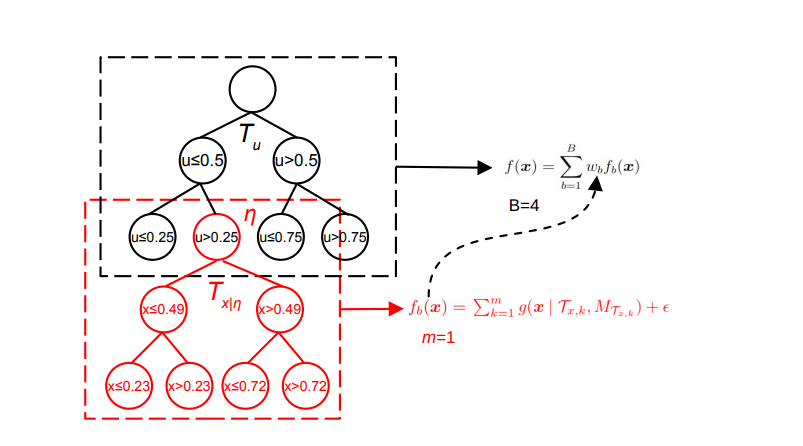

Rows: 6
Columns: 14
$ crim <dbl> 0.00632, 0.02731, 0.02729, 0.03237, 0.06905, 0.02985
$ zn <dbl> 18, 0, 0, 0, 0, 0
$ indus <dbl> 2.31, 7.07, 7.07, 2.18, 2.18, 2.18
$ chas <int> 0, 0, 0, 0, 0, 0
$ nox <dbl> 0.538, 0.469, 0.469, 0.458, 0.458, 0.458
$ rm <dbl> 6.575, 6.421, 7.185, 6.998, 7.147, 6.430
$ age <dbl> 65.2, 78.9, 61.1, 45.8, 54.2, 58.7
$ dis <dbl> 4.0900, 4.9671, 4.9671, 6.0622, 6.0622, 6.0622
$ rad <int> 1, 2, 2, 3, 3, 3
$ tax <dbl> 296, 242, 242, 222, 222, 222
$ ptratio <dbl> 15.3, 17.8, 17.8, 18.7, 18.7, 18.7
$ black <dbl> 396.90, 396.90, 392.83, 394.63, 396.90, 394.12
$ lstat <dbl> 4.98, 9.14, 4.03, 2.94, 5.33, 5.21
$ medv <dbl> 24.0, 21.6, 34.7, 33.4, 36.2, 28.7From Trees to Chains: Implementing Bayesian Additive Regression with MCMC
INFO 523 - Summer 2024 - Final Project
Cristina Lafuente
Department of Electrical and Computer Engineering, University of Arizona
Bayesian Additive Regression Trees
Image source: Catalyzex
Multiple regression trees put together in a larger ensemble to model complex data with many features.
Basic Background and Purpose
- Bayesian Additive Regression Trees with Markov Chain Monte Carlo can model complex, non-linear relationships without explicit modeling of interactions.
- Bayesian approach provides uncertainty estimates giving context and understanding to reliability of the model.
- By averaging over many trees, it is less likely to be over-fitted than if a single, large tree were used.
- They are additive because the overall prediction is the average of the predictions of the contributions from each tree.
- MCMC methods generate samples from the posterior distribution of the parameters by constructing a Markov chain with the desired distribution as the equilibrium distribution.
Details
EQUATION:
Given the standard polynomial regression equation:
\(E [Y] = \beta_0 +\beta_1 B_1(X_1)+\beta_2 B_2(X_2) + \cdot \cdot \cdot + \beta_m B_m(X_m)\)
Assuming that the Bi basis functions in a standard polynomial regression equation are decision trees, the equation becomes:
\(E[Y] = \phi (\sum_{j=0}^m g_j(X_i T_j, M_j), \theta)\)
where:
each gj is a tree of the form g(Xi Tj, Mj)
Tj represents the structure of the binary tree (the set of internal nodes and their decision rules and a set of terminal nodes)
\(M_j = \{\mu_{1,j}, \mu_{2,j}, \cdot\cdot\cdot, \mu_{b,j}\}\) represents the values at the bj terminal nodes
\(\phi\) represents an arbitrary probability distribution that will be used as the likelihood in the model
\(\theta\) other parameters from \(\phi\) not modeled as a sum of trees
Some examples of probability distributions might be a Gaussian, a Poisson distribution, or a t-distribution.
PRIORS
To specify the BART model, priors need to be specified. These priors help shape the model’s structure, control the complexity and guide the learning process. Those prior specifications can be:
- Tree Structure and Complexity: Limiting tree depth and size.
- Terminal Node Values: Specifying the distribution for leaf values (i.e. normal distribution)
- Splits and Growth: Controlling the likelihood and nature of tree splits and number of trees within the ensemble.
- Weights and Hyperparameters: Setting priors to balance flexibility and regularization
MCMC UNCERTAINTY Markov Chain Monte Carlo is used to sample from the posterior distribution of the parameters. It generates samples of the regression trees’ structures - arrangement of splits and terminal nodes - exploring possible tree configurations.
Each tree’s terminal node values are sampled from their posterior distributions. The node values usually follow a normal distribution with mean and variance specified by the model.
Once MCMC sampling is complete, predictions for new data are obtained by averaging predictions from all sampled trees. Each tree contributes to the final prediction based on its sampled weight.
The variablity in predictions across sampled trees reflects uncertainty in the model.
Purpose of the Model
The purpose of the Bayesian Additive Regression Trees with Markov Chain Monte Carlo is to provide a robust and flexible framework for predictive modeling and inference using both the Bayesian principles and regression tree methods. This method models complex relationships and quantifies uncertainty. It prevents overfitting while delivering accurate predictions for a variety of real-world applications. It offers the best of the Bayesian inference and tree-based models.
Relation of this topic to course
BART with MCMC is related to the following course topics:
Regression
BART builds flexible models using decision trees capturing non-linear interactions.Overfitting
Overly complicated tree structures are penalized through the use of priors to prevent overfitting to allow it to generalize well to any new data (test).Regression Trees
BART represents the sum of multiple regression trees where each tree captures a different feature of the data.Bayesian Methods
The prior distribution is applied to the structure of the regression trees influencing how they are built and the complexity of the model. Additionally, posterior sampling like MCMC methods update the structure and their parameters.Data manipulation
With BART models, if models do not fit well, feature selection to eliminate noisy features may help the model fit better.Ability to handle non-linearity and interactions
BART is able to handle more complex relationships and the splitting and combining of the decision trees allows for the handling of interactions.
Real-world applications
BART with MCMC is useful in real-world applications where data exhibits non-linear relationships and there are interactions between the variables, there is need for uncertainty estimates, especially if high accuracy is preferable.
Some specific examples include:
- Finance: From credit risk assessment to stock price prediction, financial analysis is complex and non-linear and requires in depth analysis.
- Healthcare: Disease risk modeling based on risk factors where there are innumerable interactions to patient outcome predictions are complex.
- Marketing: Customer behaviors can be complicated and this model is more able than most to examine the many different aspects.
- Environmental Science: From climate modeling to ecological modeling, this method can help scientists examine different variables, their impacts and patterns. This can help with conservation planning and assessing environmental impact.
- Engineering: Detection of anomalies or faults based on sensor data before failure has occurred or in quality control by identifying factors which affect defects. Uncertainty estimates can help specifically identify quality control issues.
- Epidemiology: BART can model everything from disease spread to intervention effectiveness and give uncertainty estimates which are important for understanding and predicting points of possible outbreaks.
- Real Estate: BART can be used to predict property values based on location, size, amenities as well as markets. It can also be used to forecast future prices through market trend analysis.
The data
The Boston Housing dataset from the ‘MASS’ library consists of various features related to housing, including:
- crim: Per capita crime rate by town
- zn: Proportion of residential land zoned for lots over 25,000 sq. ft.
- indus: Proportion of non-retail business acres per town
- chas: Charles River dummy variable (1 if tract bounds river; 0 otherwise)
- nox: Nitric oxides concentration (parts per 10 million)
- rm: Average number of rooms per dwelling
- age: Proportion of owner-occupied units built prior to 1940
- dis: Weighted distances to five Boston employment centers
- rad: Index of accessibility to radial highways
- tax: Full-value property tax rate per $10,000
- ptratio: Pupil-teacher ratio by town
- black: 1000(Bk - 0.63)^2 where Bk is the proportion of Black residents by town
- lstat: Percentage of lower status of the population
- medv: Median value of owner-occupied homes in $1000s (target variable)
The data looks like:
Worked Example with given Data
First the data is split into a 70% training, 30% test where the target is the median value of owner occupied homes (in thousands of dollars).
Then, using the bartMachine package, create a BART model. This package is nice because it creates the model and has a lot of the information that is very useful for understanding how well the data fits the model.
It shows the \(\sigma^2\) values where a lower value represents a better fit.
L1 and L2 Mean Absolute Error and Mean Squared Error as well as root mean squared error.
Additionally a pseudo R squared value and shapiro-wilk test for normality of the residuals p-value is included as well as a p-value for zero-mean noise (how close to zero the mean remains).
bartMachine initializing with 50 trees...
bartMachine vars checked...
bartMachine java init...
bartMachine factors created...
bartMachine before preprocess...
bartMachine after preprocess... 13 total features...
bartMachine sigsq estimated...
bartMachine training data finalized...
Now building bartMachine for regression...
evaluating in sample data...donebartMachine v1.3.4.1 for regression
training data size: n = 367 and p = 13
built in 1.2 secs on 1 core, 50 trees, 250 burn-in and 1000 post. samples
sigsq est for y beforehand: 22.204
avg sigsq estimate after burn-in: 3.27317
in-sample statistics:
L1 = 397.84
L2 = 694.47
rmse = 1.38
Pseudo-Rsq = 0.9789
p-val for shapiro-wilk test of normality of residuals: 0.60729
p-val for zero-mean noise: 0.95885 [1] "Mean Squared Error: 12.4122135495361"bartMachine v1.3.4.1 for regression
training data size: n = 367 and p = 13
built in 1.2 secs on 1 core, 50 trees, 250 burn-in and 1000 post. samples
sigsq est for y beforehand: 22.204
avg sigsq estimate after burn-in: 3.27317
in-sample statistics:
L1 = 397.84
L2 = 694.47
rmse = 1.38
Pseudo-Rsq = 0.9789
p-val for shapiro-wilk test of normality of residuals: 0.60729
p-val for zero-mean noise: 0.95885 [1] "Mean Squared Error: 12.4122135495361"In addition to the baseline information, it is also of value to look at which variables are of most importance to the model.
.....
The relationship between the predicted values and the actual values.

The posterior distribution of predictions can be used to provide a probabilistic description of possible outcomes that reflect both uncertainty and variability. The average provides a central tendency estimate of the prediction.

Covariance Importance
The covariance importance test can show whether the combined features have significant impact on outcome (p-value <0.05)
bartMachine omnibus test for covariate importance
..................................................
..................................................p_val = 0 
Variable Proportions
The proportions of each variable can be shown as a list to get a more precise list so that, if desired or needed, lower value variables could be removed to improved the model.
crim zn indus chas nox rm age
0.07032911 0.04334977 0.08545582 0.05315078 0.09137682 0.11282847 0.05491538
dis rad tax ptratio black lstat
0.11280721 0.04943022 0.07332681 0.07570797 0.07266774 0.10465388 MCMC Uncertainty
Looking at the Markov-Chain Monte Carlo Uncertainty can give a good visual representation of the uncertainty at different points throughout the data.

Conclusions, Recommendations, Future Work
BART with MCMC is one of the better methods for modeling datasets with non-linear relationships or complicated interactions without requiring explicit specifications for all interactions and relationships. The inclusion of uncertainty data increases its value by allowing users to have an implicit understanding of how much to trust it. It is useful in many different real-world applications across a wide variety of fields. As data collection tools improve, datasets will become more complicated and this model will continue to have value because of its ability to deal with large complicated datasets.
References
Bayesian Modeling and Computation in Python. (2022). Bayesiancomputationbook.com. https://bayesiancomputationbook.com , Hugh A. Chipman, Edward I. George, and Robert E. McCulloch.
CatalyzeX. (2023). Sharded Bayesian Additive Regression Trees. CatalyzeX. https://www.catalyzex.com/paper/sharded-bayesian-additive-regression-trees
Veronika Ročková and Enakshi Saha. On theory for bart. In The 22nd International Conference on Artificial Intelligence and Statistics, 2839–2848. PMLR, 2019.